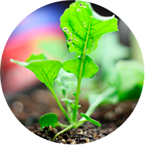
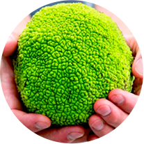
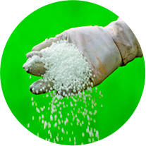
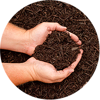
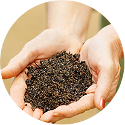

Nursery Supply Co. LLC, the manufacturer of Black Platinum and Gold Diamond hardwood mulch was founded in 1974. In March 2004 the company was purchased by its current ownership based in Louisville, KY. Our mulch manufacturing plants in Clay City, KY and Greenville, IN provide numerous mulch products to customers throughout Ohio, Indiana and Kentucky. We service a customer base which includes;

Potting Soil

Peat Moss

Fertilizers

Mulch

Compost
Community
Benefits
Nursery Supply Co., LLC Fundraising is dedicated to helping organizations of all types fund their needs and efforts. Our fundraisers have helped sports teams purchase new uniforms, youth groups fund mission trips, scout troops pay for camping equipment and neighborhood organizations pay for landscaping. The sky is the limit on profit dollars your organization can generate with a mulch and/or bulb fundraiser from Nursery Supply Co., LLC.